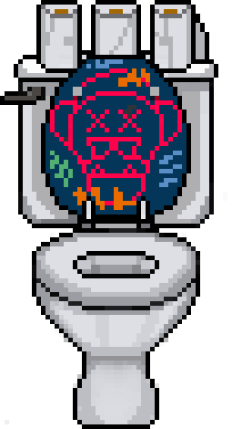

Wellcome To The
Bored Ape Yacht Club
BAYC is a collection of 10,000 Bored Ape NFTs—unique digital collectibles living on the ethereum blockchain. Your Bored Ape doubles as your Yacht Club membership card, and grants access to members-only benefits, the first of which is access to THE BATHROOM, a collaborative graffiti board. Future areas and perks can be unlocked by the community through roadmap activation.


FAIR DISTRIBUTION
(Bonding Curves Are a Ponzi)
There are no bonding curves here. Buying a Bored Ape costs 0.07 ETH. There
are no price tiers; BAYC membership costs the same for everyone.
Note: Thirty apes are being withheld from the sale.
These will be used for giveaways, puzzle rewards—and
for the creators' BAYC memberships
The initial sale has sold out. To get your Bored Ape, check out the collection on OpenSea.
The Specs
Each Bored Ape is unique and programmatically generated from over 170 possible traits, including expression, headwear, clothing, and more. All apes are dope, but some are rarer than others.
The apes are stored as ERC-721 tokens on the Ethereum blockchain and hosted on IPFS. (See Record And Proof.) Purchasing an ape costs 0.07 ETH.
To access members-only areas such as THE BATHROOM , Apeholders will need to be signed into their Metamask Wallet.

Wellcome To The Club
When you buy a Bored Ape, you’re not simply buying an avatar or a provably-rare piece of art. You are gaining membership access to a club whose benefits and offerings will increase over time. Your Bored Ape can serve as your digital identity, and open digital doors for you.

10,000 Provably-rare Bored Ape tokens

Fair Launch, fair distribution: All apes cost 0.08 ETH

Ownership and commercial usage rights given to the consumer over their NFT

The Bathroom: A member's-only graffiti board

Gain additional benefits through roadmap activations
THE BATHROOM
The BAYC Bathroom will become operational once the presale period is over. It contains a canvas accessible only to wallets containing at least one ape. Like any good dive bar bathroom, this is the place to draw, scrawl, or write expletives.
Each ape-holder will be able to paint a pixel on the bathroom wall every fifteen minutes. Think of it as a collaborative art experiment for the cryptosphere. A members-only canvas for the discerning minds of crypto twitter.
We're pretty sure it's going to be full of dicks.
ROADMAP ACTIVATIONS
We’re in this for the long haul.
We’ve set up some goalposts for ourselves. Once we hit a target sell through percentage, we will begin to work on realizing the stated goal.
10%
We pay back our moms.
20%
We release the Caged Apes. 5 Caged Apes (tokens held back from the sale) are airdropped to random Apeholders.
40%
BAYC gets its own YouTube channel, BAYC LoFi Radio - Beats to Ape into Shitcoins To.
60%
Member-Exclusive BAYC Merch Store gets unlocked, featuring Limited Edition tees, hoodies, and other goodies.
80%
The clubhouse image becomes interactive and the Mysterious Note becomes legible, beginning a treasure hunt. The first to solve the mystery will be rewarded 5 ETH and a Bored Ape.
90%
The Bored Ape liquidity pool is initiated.
100%
The Mutant Ape (NFT Breeding) Arcade Machine gets fixed. And we cook up new ways to ape with our friends.